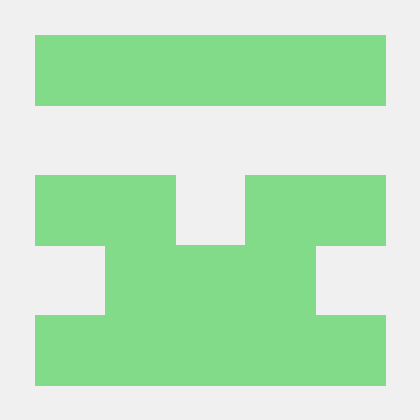

中国科学技术大学 · 国家同步辐射实验室（核科学技术学院）· 硕士研究生
研究方向：大科学装置相关智能化改造与 AI 自动化实验、AI4MS 落地。
指导老师：张国斌 老师（国家同步辐射实验室）、钟志诚 老师（人工智能与数据科学学院）。
指导老师：张国斌 老师（国家同步辐射实验室）、钟志诚 老师（人工智能与数据科学学院）。
🎓 硕士研究生一年级 @ 中国科学技术大学 · 国家同步辐射实验室（NSRL）
🤖 AI for Science & 大科学装置智能化 | 🛠️ Agent Builder
🧸 AI4MS（AI for Materials Science）探索者


你好！我是徐俊瑞（Junrui Xu），中国科学技术大学国家同步辐射实验室（NSRL，核科学技术学院）硕士研究生一年级， 导师为张国斌老师（国家同步辐射实验室）与钟志诚老师（人工智能与数据科学学院）。 我的研究方向是大科学装置的智能化改造与 AI 自动化实验，同时对 AI for Materials Science（AI4MS）的落地有浓厚兴趣。
我本科毕业于中国科学技术大学少年班学院（未来技术学院）量子信息科学专业。本科科研期间，我使用强化学习训练网络来控制自适应光学系统， 优化星地量子激光通信链路信噪比，提升约 10 dB，方案通过了真实卫星验收。
我从 ChatGPT 出现之初就开始重度使用 AI，热衷构建 Agent：参与材料计算智能体 MatCreator 的开发、 画布式多智能体平台 Open Agent World 的知识库建设，并独立开发了 AI 小说创作智能体 AnySpark。 我相信下一代个人 Agent 应当能够跨会话、跨任务、跨设备、跨组织地完成工作，把人类从"人肉总线"中解放出来。
欢迎通过邮件与我交流 Agent、AI4Science 或任何有趣的话题！

核心开发者 · 负责 Skill（闭源）优化与 Agent Loop 循环设计
A materials-computing agent that orchestrates computational-materials workflows (structure generation, property calculation, result analysis) through an agent loop. I designed the agent loop and optimized its skills.
面向材料计算的智能体系统：通过 Agent Loop 编排结构生成、性质计算与结果分析等工作流。 我主要负责 Skill 优化与循环设计，并参与与深势科技合作的多量子体系计算项目。
贡献者 · 负责知识库构建（实验性项目）
An experimental canvas-style platform where multiple agents collaborate visually. I built the knowledge-base module, enabling ingestion and retrieval of non-standardized data.
画布式多智能体协作平台（实验性）：多智能体在画布上可视化协作。 我负责知识库构建，实现非标准化数据的入库与查询。
独立开发者 · 全栈开发（Vibe Coding 实践）
A personal project exploring human-AI alignment for creative writing: mental-model alignment to capture the user's intent, a gacha mechanism to improve passage quality, and a custom canvas workflow that solidifies the writing process.
个人项目：通过心智模型对齐用户心理，用抽卡机制提升写作片段效果， 并以自定义画布工作流固化写作流程，全栈独立开发。